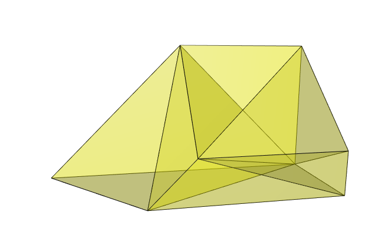

Multiple integral over a polyhedron
You are a R user and you have to evaluate the integral \[ \int_{-5}^4\int_{-5}^{3-x}\int_{-10}^{6-x-y} f(x,y,z) \,\mathrm{d}z\,\mathrm{d}y\,\mathrm{d}x \] for a certain function \(f\). How?
A possibility is to nest the integrate function:
f <- function(x,y,z) x + y*z
integrate(Vectorize(function(x) {
integrate(Vectorize(function(y) {
integrate(function(z) {
f(x,y,z)
}, -10, 6 - x - y)$value
}), -5, 3 - x)$value
}), -5, 4)
## -5358.3 with absolute error < 9.5e-11This approach works well in general. But it has one default: the estimate of the absolute error it returns is not reliable, because the estimates of the absolute errors of the inner integrals are not taken into account.
We provide another way to evaluate this integral, giving a reliable estimate of the absolute error.
The domain of integration is defined by the set of inequalities: \[
\left\{\begin{matrix}
-5 & \leq & x & \leq & 4 \\
-5 & \leq & y & \leq & 3-x \\
-10 & \leq & z & \leq & 6-x-y
\end{matrix}
\right.
\] which is equivalent to \[
\left\{\begin{matrix}
-x & \leq & 5 \\
x & \leq & 4 \\
-y & \leq & 5 \\
x+y & \leq & 3 \\
-z & \leq & 10 \\
x+y+z & \leq & 6
\end{matrix}
\right..
\] This set of inequalities defines a convex polyhedron. We can get the vertices of this polyhedron with the rcdd package:
A <- rbind(
c(-1, 0, 0), # -x
c( 1, 0, 0), # x
c( 0,-1, 0), # -y
c( 1, 1, 0), # x+y
c( 0, 0,-1), # -z
c( 1, 1, 1) # x+y+z
)
b <- c(5, 4, 5, 3, 10, 6)
library(rcdd)
scdd(makeH(A,b))$output[,-(1:2)]
## [,1] [,2] [,3]
## [1,] -5 -5 16
## [2,] -5 8 3
## [3,] 4 -1 3
## [4,] 4 -5 7
## [5,] 4 -1 -10
## [6,] 4 -5 -10
## [7,] -5 8 -10
## [8,] -5 -5 -10Alternatively, we can also get the vertices with the vertexenum package:
library(vertexenum)
enumerate.vertices(A,b)
## [,1] [,2] [,3]
## [1,] 4 -1 3
## [2,] 4 -5 7
## [3,] -5 -5 16
## [4,] -5 8 3
## [5,] 4 -1 -10
## [6,] 4 -5 -10
## [7,] -5 -5 -10
## [8,] -5 8 -10Then, to evaluate the integral, we proceed as follows:
split the polyhedron into simplices (tetrahedra), with the
geometrypackage;evaluate the integral over the union of these simplices with the
SimplicialCubaturepackage.
Let’s go. We split the polyhedron:
Here is the polyhedron splitted into simplices:
library(rgl)
triangles <- do.call(
cbind,
lapply(1:nrow(ix), function(i) combn(ix[i,], 3))
)
mesh <- tmesh3d(t(vertices), triangles, homogeneous = FALSE)
view3d(80, 10, zoom = 0.6)
shade3d(mesh, color = "yellow", alpha = 0.3)
wire3d(mesh)
We store the union of the obtained simplices in an array S:
Now we are ready to use the SimplicialCubature package. Let’s define the function \(f\) before, for example:
Finally:
library(SimplicialCubature)
adaptIntegrateSimplex(f, S)
## $integral
## [1] -5358.3
##
## $estAbsError
## [1] 1.18797e-08
##
## $functionEvaluations
## [1] 330
##
## $returnCode
## [1] 0
##
## $message
## [1] "OK"We get the estimated value of the integral with a reliable estimate of the absolute error.
For this example, we can do better. The function \(f\) is a polynomial: \[ f(x,y,z) = x + yz. \]
Then we can get the exact value of the integral by using the integrateSimplexPolynomial function of the SimplicialCubature package. Firstly, we have to define the polynomial with the definePoly function. One has \[
f(x,y,z) = c_1 \times x^{\alpha_1}y^{\beta_1}z^{\gamma_1} \, + \,
c_2 \times x^{\alpha_2}y^{\beta_2}z^{\gamma_2}
\] with \(c_1 = 1\), \(c_2=1\), \((\alpha_1,\beta_1,\gamma_1)=(1,0,0)\), \((\alpha_2,\beta_2,\gamma_2)=(0,1,1)\). Then the polynomial is defined in this way:
And its integral is obtained in this way: